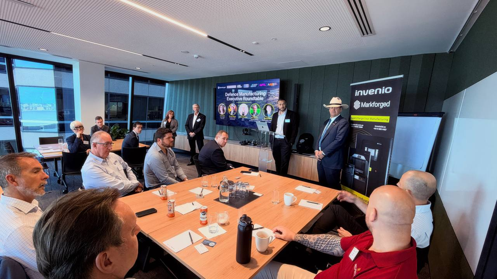
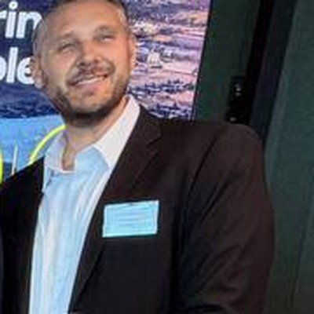
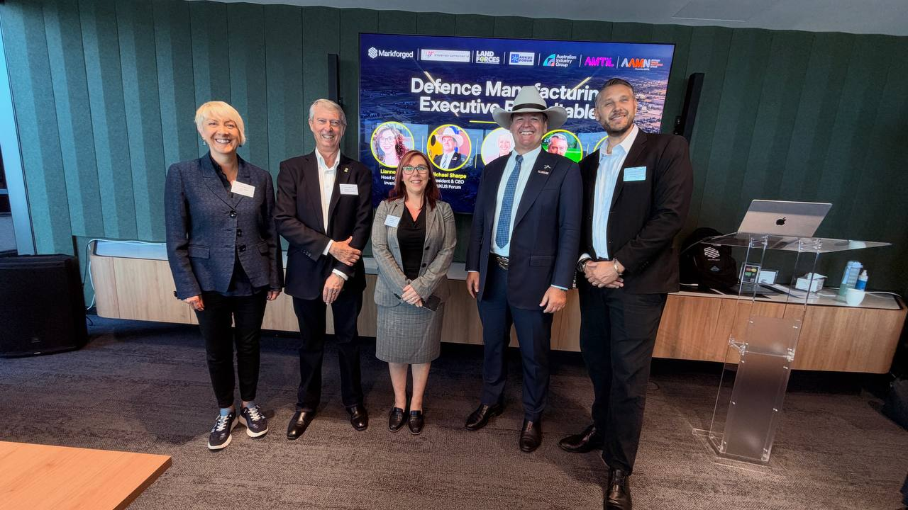
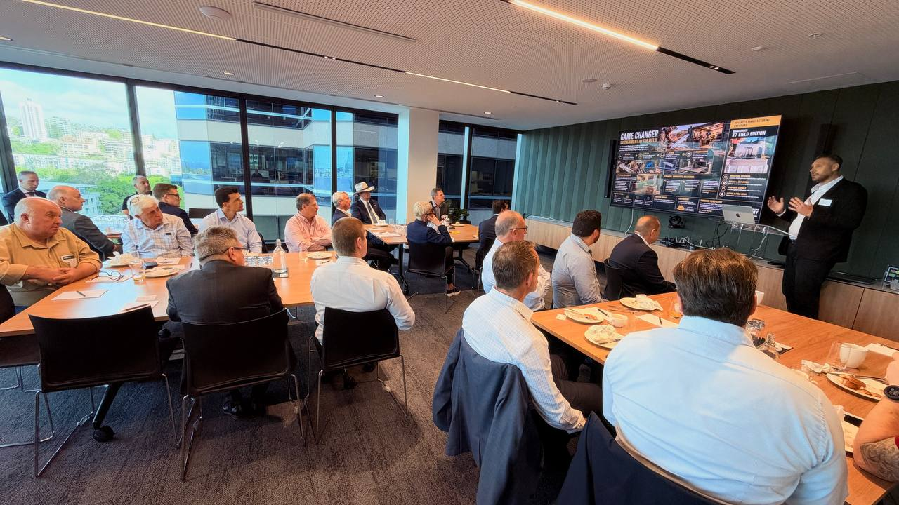
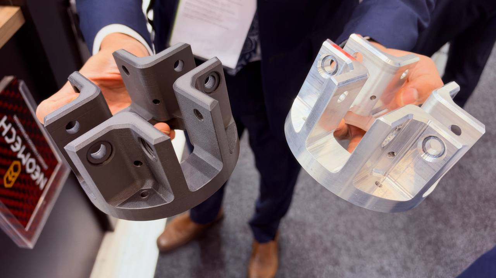
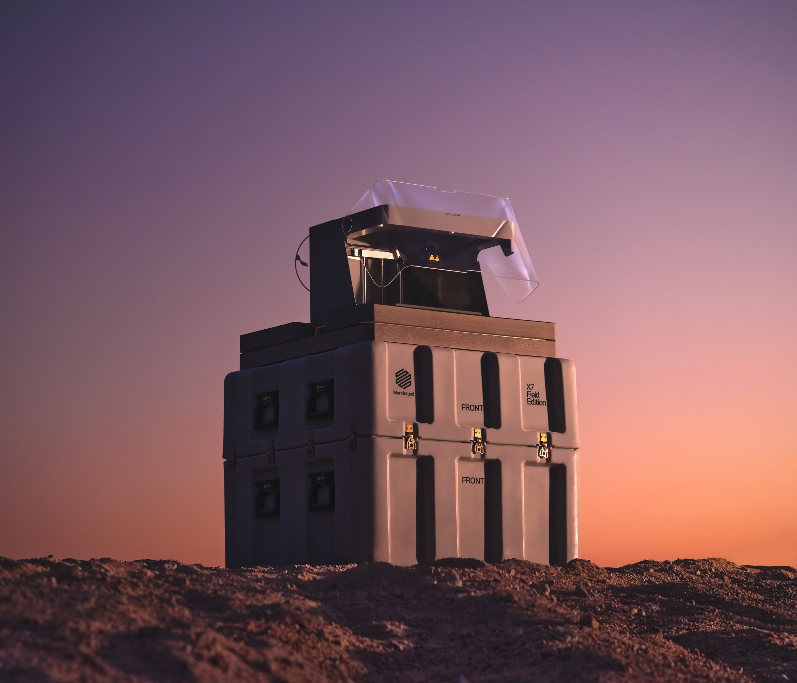

2026 年 10 月 7 日

一个国家能自己撑多久
与一般展场论坛不同的是，这场的后半段把麦克风交还给与会企业。而真正值得记下来的内容，多半出现在那个时候——包括一位制造业主当场把旧件改用新制程的再鉴定成本讲到数百万的量级，以及另一位把分布式制造的需求讲得比任何行销文案都清楚。
“如果澳大利亚明天完全被切断所有海外供应链，我们作为一个国家能撑多久？”
Richard Elving · Markforged 亚太区副总裁暨董事总经理
这场活动在谈什么
不是产品发表，是把一个产业问题摊在二十位企业负责人面前
主办方把议程切成四段：国防、AUKUS 与主权能力；强化澳大利亚主权国防工业基础；建构并扩张有韧性的国防供应链；安全的分布式制造。四段讲完，再开放一轮高管圆桌讨论。
主办方对外说明这场活动的理由很直接：地缘政治的不确定性、安全需求的变化，以及全球供应链上升高的压力，正在逼出一个更强韧的本土制造能力需求。与会者先听产业观点，再进入一轮聚焦“障碍、机会与下一步”的讨论。
讲者包含 AUKUS Forum 总裁暨执行长 Michael Sharpe、Invenio 增材制造销售主管 Lianne Kelly、Markforged 亚太区副总裁暨董事总经理 Richard Elving，以及两位长期在澳大利亚产业政策与价值链辅导第一线的讲者。合作与支持单位包含 Land Forces、AUKUS Forum、Australian Industry Group、AMTIL 与 AIDN。

第一个命题
把“供应链”这个词换成“价值链”，问题就变成你坐在哪一段
上半场的主讲人用一个换词开场：不要再说 supply chain，要说 value chain，接着问自己坐在这条链的哪一段。他的理由是，澳大利亚真正的竞争优势在设计与智慧财产，不在把东西做出来——制造，就包装与生产这件事本身而言，本质上是商品，世界上总有人做得比你便宜。
他把这个判断挂在“先进制造微笑曲线”上：价值集中在生产前（研究、设计、智慧财产、品牌）与生产后（配销、贴近终端使用者、售后与变现）两端，中间的生产环节最薄。他称这是企业用来判断自己在国防价值链位置的、最有力的策略框架之一。
他举的对照很具体。一家昆士兰公司研发出更好的焊接方式，欧洲的主承包商把它带回欧洲的生产设施采用——对澳大利亚而言，那实质上是一笔权利金，虽然帐面上不见得看得到。另一个例子是把原本用于资源探测的金属侦测技术转进军用无人机。他的结论是：该问的不是自己能不能做出来，而是自己的价值链里有什么可以迭代。
国防采购的时间尺度
需求提出到开始建造，中间隔了二十六年
谈到国防专案的“块状”特性与长周期，讲者用了一个澳大利亚人都知道的例子：Henderson 的登陆艇。陆军大约在 2000 年进入东帝汶时就提出需求，二十六年后才开始建造，数量是八艘重型、九艘轻型。作为对照，冲绳战役当年动用了两千五百艘登陆艇。他把这个落差称为国防的政治与现实之间的错位。
他对产业政策的要求同样直白：企业要的不是补助金，而是订单编号，而且是稳定的订单编号。他认为当前的国防工业部长理解可靠价值链与稳定专案的必要性，也认同澳大利亚自汽车工业流失后缺乏规模的事实。
另一个被他反复强调的概念是互补性。他特别声明这不是串通、不是反竞争，而是找出各自的互补位置、组成一条集体价值链。他举的反例来自矿业：一台设备到了翻修时数要进厂，送回场的那天所有人都知道那活会在哪里做，但上下游不愿意一起规划，结果是人站著等、生产力流失。
Markforged 的论点
先问一个没人想回答的问题，再谈技术
Markforged 亚太区副总裁暨董事总经理 Richard Elving 接着上台。他没有从产品开始，而是从一个假设开始：如果澳大利亚明天完全被切断所有海外供应链，这个国家能自己撑多久？有哪些能力是现成的？要建立主权能力，接下来该走哪几步？他把增材制造定位成其中的一部分，不是全部。
他对旧模式的描述是：在成本最低的地方大量生产、堆进大型仓库、再运回澳大利亚。这个模式确实有效，很多企业也受惠于此。问题在于它的前提是链不会断。他以自身的区域职责说明观察——固定往返中国、印度、日本与澳大利亚东岸——各国都在加速建立主权能力，而他认为澳大利亚在这件事上的节奏偏慢。
他同时把自动化与人力问题放进同一个框架。他在韩国看到的工厂几乎没有现场作业员；展场上的一家澳大利亚机械加工厂客户找不到机械技师，业主父子坐在控制室里看著机器人完成搬料、加工、焊接与检测。在那家公司看来，这是在劳力短缺与技能断层下唯一能与他国竞争的方式。

位置：持续维护，不是取代制造
“国防部门把增材制造看成一种人寿保险”
Richard Elving 把增材制造在国防中的角色讲得很节制：印不出一艘潜艇，印不出整个平台，但这项技术撑得住持续维护——制作关键零件或临时替换件。那才是它今天真正的位置。他也说明，Markforged 日常的主力其实是工厂里的工具、工装、夹具、替换件与低量零件。
他把新旧模式的差别压成一句话：从移动零件转为移动数据。在一地设计一个零件，把数据送到世界上任何一台机器，在需求点用工业级技术与工业级材料做出来。他没有夸大适用范围——对在座的企业而言，这可能只占产品的百分之一到百分之五。
已经在跑的应用
从前线、舰上到轨道上
乌克兰前线已部署数百台设备。作为美国公司，Markforged 与美国陆军与海军关系密切；当前线出现零件需求，零件可以在伯斯或波士顿完成设计、当天送抵、当天制造出来。
在澳大利亚陆军方面，Markforged 与陆军合作把设备连同 3D 扫描器集装箱化，并开发出理论上可由直升机空投进战区的野战部署版。Richard Elving 在现场引述澳大利亚陆军 Commander Baldoni 的说法：缩短供应链、减少必须穿越脆弱通信线的物资，可以让指挥官对达成任务更有把握。
海上的部分，Markforged 自 2021 年起参与美国海军、澳大利亚海军与多个友好国家的海试。做法是配一台设备与一支随身碟，协助舰上逆向工程与 3D 扫描潜艇上必要的零件——也包含门铰链这类非关键件，作为进入关键件之前的测试。目前已累积约一百项可在海上制造的零件。
无人机的部分，他引述乌克兰方面的说法：目前约八成的伤亡与无人机有关。乌克兰近期婉拒了部分外援装备，表示需要的不是坦克或直升机，而是制造无人机的能力；该国今年的无人机产量超过一千万架。他指出增材制造在这里的价值很直接——当酬载、武器或装药规格改变，改动可以在很短的时间内做进去。太空方面，已有 3D 打印的卫星零件在轨运行超过一年。
圆桌：已经在用的人怎么说
一具 2.4 公尺翼展的飞行载具，九个月从草图到两台原型
圆桌开始后，由阿德莱德的先进数字工程公司 Neomech 董事总经理 Andy Oliver 先发言。该公司 2024 年成立，背景横跨赛车运动与国防工程，主业是设计、结构分析、计算流体力学与空气动力，约九成五的业务以国防为导向，近期投资了 FX10 与 FX20 两台系统。
他描述的案子是直接为澳大利亚皇家空军（RAAF）Plan Jericho 颠覆性技术计划完成的：一具翼展 2.4 公尺的飞行载具，所有零件都以该公司采用的增材制造技术产出，从五张餐巾纸上的草图到两台原型，花了九个月。为了交付，他和合伙人必须快速招人、租下新厂房并投入设备——他形容那是一笔可观的投资，而到目前为止是有回报的。
同一场也有一家来自新堡（Newcastle）的电动化业者分享了前一天刚发表的柴电混合动力物流车：底盘由伙伴制造，采用既有的传动系统，电池与控制系统自建，从概念到制造、再到送进 Land Forces，只用了六个月。他们另外展示一款以军用油桶（jerrycan）规格设计的电池——因为每一台军用车上都有油桶架——容量 2.5 千瓦时，可用于充电或接太阳能。
真正卡住的那一关
不是技术做不到，是旧件改用新制程的再鉴定成本与签核心态
圆桌上最具体的一段质疑来自一位与会者。他的提问分成两层：新零件走增材制造没有问题，开发、认证、逐项打勾，流程清楚；但如果是一个已经在外面服役很久、已被证明可靠的既有零件，现在要改用打印来做呢？材料不同、制程不同——印的不是铣的——那么重新鉴定一个零件、一套系统、一个方案的成本由谁承担？他说，他们做过的某些验证，费用是以百万计的。
第二层才是真正的阻力。他说，你常常可以把一份很完整的技术论证摆在对方面前，说明为什么这个印出来的件跟那个已经加工了二十年的件一样好，而对方的回答会是：是啊，但我们一直都是那样签核的，除非你跑那个超贵的测试，否则我不接受。他把这件事归为心态问题，而不是技术问题。
同一场有两个可行的回应。其一来自 Neomech：他们有一个国防客户的零件原本走传统减法制造，而该案的关键性能指标是酬载重量。当他们能够说明换成新材料可以让酬载提升二到三成，那笔为增材重做可制造性设计的开发成本，对客户来说就站得住脚了。其二是验证方法——在印零件的同时一起印拉伸试棒，送第三方检测机构做测试，取得客观质量证据。他同时补了一句：没有任何东西能取代实地测试。
主持人把这一段收在一个简单的判准上：任何商业决定都要被论证。如果海军认为在舰上放一台设备是有好处的，那背后一定有经济上的道理，也有军事上的道理。

需求的轮廓被讲清楚了
三十年的老车散在阿拉斯加、印尼与南美，备件要怎么供？
另一位与会者约在一年前买下一个澳大利亚本土的车辆品牌。产品是一种全地形平台，核心能力是把高酬载以小轴距送进极端环境。他说这是个技术成熟但不可规模化的生意——每一台都是客制单件——而他的做法是把整间公司重构成一个智慧财产事业，去运用外部的制造基础设施，而不是把产能握在自己手上。
接着他把需求讲得比任何行销文案都清楚：他们有三十年的车辆还在阿拉斯加服役，还有一些在印尼、一些在南美。要去供应那些零件，甚至只是尝试去供应，在商业上都不可持续。但如果把他们的设计带进所谓的工业 4.0，再把设计连上一台距离四小时车程的设备——对他这样的公司，以及对使用他们产品的那个社群而言，那会是一个巨大的推力。
Markforged 当场说明了对应的方向：公司正在建构一个分布式制造平台，概念近似串流服务——设计者保有智慧财产，当需要在某地制造零件时，可以搜寻需求点附近可用的设备并就地生产；设备内建扫描功能，印完会扫描零件、确认成品与设计相符。平台以物联网连接每一台设备，文件可透过网络传送，而接收端只能把零件做出来，拿不走设计本身。

主办方的立场
“我们不是只来卖设备的”
Invenio 在圆桌上强调的不是产品，而是耐性。该公司增材制造销售主管说明，有一项他们投入三年、业界普遍不看好的验证工作，是靠著找到一家愿意一起走完全程的合作企业才完成的——验证的内容涵盖材料、打印方式，以及确保今天印出来的件与多年后印出来的件具备相同结果的可重复性。她以此说明主办方对这个市场的参与方式。
AUKUS Forum 总裁暨执行长 Michael Sharpe 主持了圆桌。他以一段亲身经历开场：疫情前夕，政府部门打电话问他澳大利亚有没有生产口罩的公司；他透过产业网络找到一家，陆军派了十名工程师去协助扩产，澳大利亚就这样开始量产口罩。他说，重点不在那段故事本身，而在它证明了一件事——当这个国家需要让制造规模起来的时候，它做得到。
他也在会中提醒了一个容易被忽略的落差：研究显示，约三成的澳大利亚制造商连网站都没有。他举的例子是一家做货斗与拖挂露营设备的公司，靠著一位董事的女儿替公司开设的社群帐号，被沙乌地阿拉伯的车商看到，进而开始外销。把自己的故事讲出来，在他看来是这个产业被低估的一项能力。
这场活动留下什么
三个可以直接拿去用的判准
第一，先定位再投资。价值链的哪一段是你的，决定了你该不该把钱放在产能上。对多数澳大利亚企业而言，答案偏向设计、智慧财产与贴近终端使用者的服务，而不是把制造规模堆大。
第二，从持续维护切入，不要从取代切入。增材制造在国防的位置是关键件与临时替换件，不是整个平台。把它当成缩短供应链、降低对脆弱运补线依赖的手段，比把它当成一种生产方式更接近现况。
第三，把商业方程式算出来再谈技术。现场最具体的障碍不是材料性能，而是旧件改制程的再鉴定成本，以及签核端的心态。能绕过这一关的，是把论证从同样强度，换成换了之后多出什么——例如酬载提升——再搭配第三方测试提供的客观证据。
活动最后，主办方邀请与会者到展场的摊位继续交流。对 Markforged 而言，这场早餐会真正的产出不是当天的订单，而是二十家企业在同一张桌子上，把各自卡住的地方讲了出来。
想知道你的零件适不适合？
Markforged 在活动上提出的做法是派工程师到现场：走过产线，从上千个零件里找出那一个、或那一百个可以做得更便宜更快的，并协助把投资回报算出来。大中华区与越南的洽询请由此联系。
联系我们关于这场活动
- 名称：Defence Manufacturing Executive Roundtable｜Mission-Ready: Building Sovereign Defence Manufacturing Resilience Through Additive Manufacturing
- 时间与地点：2026 年 10 月 7 日上午，澳大利亚伯斯；Land Forces 2026 场边邀请制活动
- 主办：Invenio 3D 与 Markforged 共同主办
- 合作与支持单位：Land Forces、AUKUS Forum、Australian Industry Group、AMTIL、AIDN
- 本文依现场内容整理。与会企业之公司名称与未公开之商业信息，依其意愿不予具名。